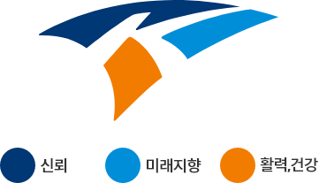
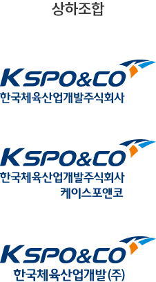
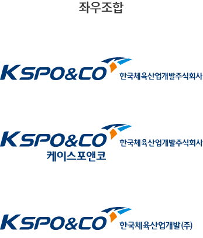

심볼마크, 시그니춰
심볼마크
한국체육산업개발은 한국을 대표하는 스포츠 공익기업인 국민체육진흥공단(KSPO)의 출자회사로서 스포츠 전문시설을 관리하고 국민에게 건강과 활력을 제공하는 의미와 이미지가 쉽게 전달될 수 있도록 'KSPO'와 'CORPORATE'의 영문워드를 조합하여 'KSPO&CO(케이스포앤코)'라고 하였습니다.
CI 다운로드

KSPO&CO를 상징하는 우측의 삼각형 모티브는 상승하는 다이내믹한 곡선의 형태로 스포츠 공기업을 상징하는 'K'를 원근감 있는 면과 결합하여 심벌화하였습니다. 'K'로 연결된 세계의 면은 신뢰하는 공기업, 건전한 스포츠정신, 국민을 위한 스포츠 인프라가 하나로 어우러져 스포츠를 통해 미래를 개척해가는 한국체육산업개발의 의지를 보여주고 있습니다.
심볼마크는 블루, 스카이블루, 오렌지 세개의 색으로 이루어졌으며 블루는 스포츠 대표 공기업으로서 국민에게 주는 신뢰감을 전달하며, 스카이블루는 한국체육산업개발과 국가의 미래지향적인 스포츠정신을, 오렌지컬러는 국민에게 활력과 건강을 주는 스포츠 인프라를 상징하고 있습니다.
'KSPO&CO(케이스포앤코)'는 공단브랜드 'KSPO'를 연계하여 공익기업인 한국체육산업개발의 신뢰도를 높이고, 'CORPORATE'를 의미하는 'CO'로 실질적인 실행, 사업의 의미를 부가하여 사업의 주체, 기업으로서의 전문적 이미지를 담고 있습니다.
로고
시그니춰


시그니춰 다운로드